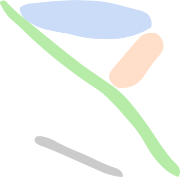

Absorption Line Intensities
Spectral Type : Temperature :
Line Strength
Spectral type cursor
Spectral Type
Drag the red cursor to choose a spectral type, or focus it and use the arrow keys: left towards the hotter O stars, right towards the cooler M stars.
Simulated Spectrum
HR Diagram
Luminosity

Temperature
Distance Modulus Calculation
Star Attributes
spectral type:
temperature: